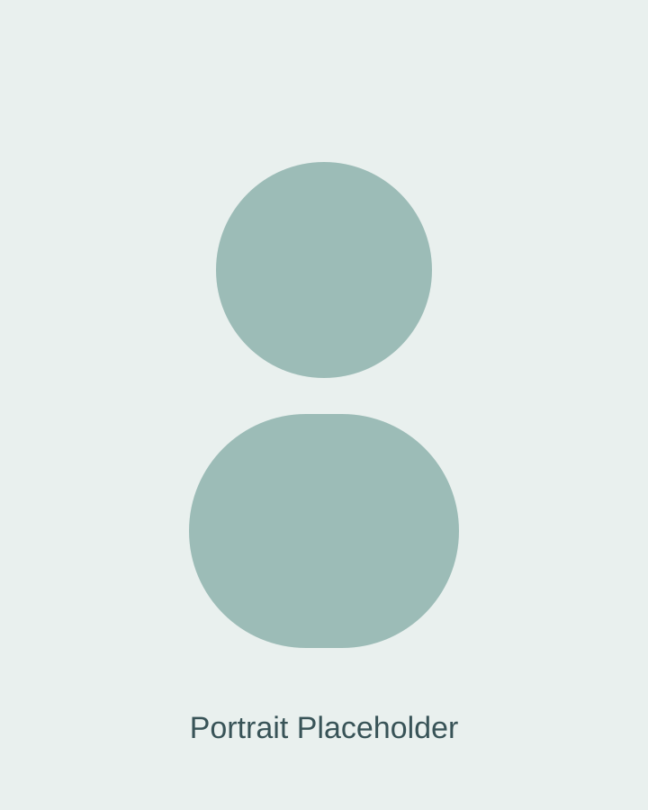

Hobbies
- Photography and visual storytelling
- Calisthenics and structured fitness training
- Building keyboard and desk setup projects
- Reading about technology trends and digital ethics

I chose Applied Computer Science because I enjoy solving complex problems with practical technology. I am especially motivated by cloud systems and cyber security, where I can combine analytical thinking with real-world impact.
My ambition is to become a trusted professional in secure cloud engineering, working on scalable platforms and resilient digital services.